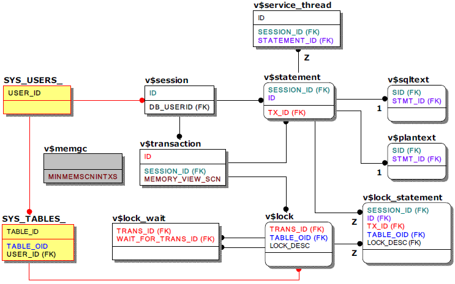

세션, 쿼리, 트랜잭션, lock, 서비스쓰레드, 메모리DB GC 관련 주요 메타테이블 및 성능뷰
메타테이블 및 성능뷰를 통하여 실시간으로 세션, 쿼리, 트랜잭션, lock, 서비스쓰레드, 메모리DB GC 상태를 확인 가능하다. 관련 조인쿼리 시 참고할 주요 키 컬럼만 표기한 메타테이블 및 성능뷰의 관계는 아래와 같다.
별개로 표시되어 있는 v$memgc는 메모리DB GC에 대한 성능뷰로 다른 메타테이블 및 성능뷰와 직접적인 관계는 없으나 v$transaction의 특정 컬럼과 함께 활용된다.
유의사항으로는 v$statement의 컬럼 중 쿼리수행과 관련된 통계정보는 TIMED_STATISTICS 프로퍼티가 활성화(1)되어야만 갱신되므로 해당 프로퍼티의 활성화 여부를 반드시 확인하여야 한다는 것이다.
TIMED_STATISTICS 기본값은 비활성화(0)이다.
참고로 이중화를 수행으로 인한 트랜잭션도 v$transaction, v$lock, v$lock_wait를 활용하나 세션번호, 쿼리번호가 없는 이중화 트랜잭션 특성상 이중화 섹션에서 별도로 언급하는 것으로 한다.

주요 메타테이블
- SYS_USERS_
데이터베이스 사용자의 정보가 저장된 메타테이블로 사용자이름(USER_NAME)과 같은 정보를 확인할 수 있어 가장 기본적으로 활용된다.
- SYS_TABLES_
테이블(큐테이블 포함)뿐만 아니라 시퀀스, 뷰의 정보도 함께 저장한 메타테이블로 해당 객체 이름(TABLE_NAME)과 같은 정보를 확인할 수 있어 SYS_USERS_와 함께 기본적으로 활용된다.
주요 성능뷰
- v$session
현재 접속되어 있는 사용자의 세션 정보를 나타내는 성능뷰이다.
- v$statement, v$sqltext, v$plantext
v$statement는 세션과 관련된 쿼리의 정보 및 쿼리 레벨의 통계정보를 나타내는 성능뷰로 쿼리의 수행시간 및 수행빈도 측정이 가능하다. 세션 별로 가장 마지막에 direct 수행(execution)한 하나의 쿼리와 prepare 된 다수의 쿼리에 한하여서만 유지되는 뷰로 관련 세션을 종료되면 사라지게 된다. 이 뷰를 통하여 쿼리의 텍스트도 최대 16K까지 확인할 수 있다.
쿼리의 텍스트가 16K를 초과하는 경우는 쿼리 텍스트 전체를 나타내는 성능뷰인 v$sqltext를 활용하며 쿼리에 대응하는 실행계획을 확인하려 할 때는 v$plantext를 활용한다.
앞서 언급했듯 v$statement의 컬럼 중 쿼리 수행과 관련된 통계정보는 TIMED_STATISTICS 프로퍼티가 활성화(1)되어야만 제공되므로 해당 프로퍼티의 활성화 여부를 반드시 확인하여야 한다. TIMED_STATISTICS 기본값은 비활성화(0)이다.
- v$service_thread
서비스쓰레드의 상태를 나타내는 성능뷰로 v$session, v$statement와 조인하여 관련 세션과 쿼리를 확인할 수 있다. 뷰 자체만으로도 의미가 있어 단독으로 모니터링 하기도 한다.
- v$transaction, v$memgc
v$transaction은 현재 수행되는 모든 트랜잭션의 정보를 나타내는 성능뷰로 lock 관련 모니터링 시 기본적으로 사용된다. 또한, 메모리 DB GC의 정보를 나타내는 성능뷰인 v$memgc를 통하여 세션, 구문과 연계된 MVCC 상태를 확인할 수도 있다.
- v$lock, v$lock_wait
v$lock은 트랜잭션 수행 중 발생한 lock에 대한 모든 정보를 나타내는 성능뷰로 lock의 선후관계를 나타내는 v$lock_wait과 함께 활용한다.
- v$lock_statement
현재 lock을 획득한 트랜잭션에서 가장 마지막에 수행된 구문을 나타내는 성능뷰로 lock 발생시 관련 세션 및 구문에 대한 신속한 확인을 위해 주로 활용된다.
{kind=link}